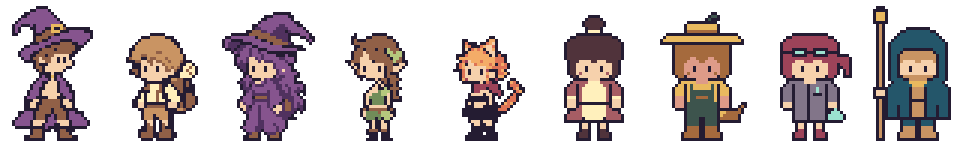

직원 4명 · 캐릭터 컨셉과 작업실 배치안 v1
후보 단계입니다. assets/·scripts/·저장은 바꾸지 않았고 게임에 연결하지 않았습니다. 직원 4명(data/content_expansion.json의 판매 보조·재배 보조·조제 보조·원정 길잡이)마다 대기 포즈 1장(32×48)을 원본 픽셀 지도로 직접 그렸습니다.
정해 주실 것
컨셉 4명 · 승인된 5명과 같은 줄에
왼쪽 5명은 승인된 주인공·손님 대기 첫 칸(읽기 전용), 오른쪽 4명이 이번 후보입니다. 같은 32×48 캔버스·발 46행·공통 3배입니다.

작업실 배치안 비교 · 540×249 아트(원본 180×83 × 3) + HUD
겹침 픽셀 수
직원 불투명 픽셀(표시 3배 기준)과 각 요소가 닿을 수 있는 모든 픽셀의 합집합이 겹치는 수입니다. 점유 영역은 tools/build_f23_decor_v1.py의 build_masks()를 그대로 불러 썼고(주인공 모든 포즈·수면 Z·기절 별·국자, 손님 4명 대기/걷기/받기/병 든 퇴장, 판매 병 경로, 입고 병 경로, HUD, 가구, 숙성통), 승인된 판매대 소품(96,40)·창틀 기념품(14,0)을 더했습니다. C는 바닥 가구(약초대·솥·불·판매대·소품)에 가려진 부분을 빼고 센 값이며, 가구 칸에는 그 바닥 가구를 넣지 않았습니다.
필요 작업량 추정
“빡세다”를 판단할 근거입니다. 키프레임은 사람이 그리는 전신 장수, 파생 칸은 기존 파이프라인(호흡 3초·깜빡임 4.5초)으로 만드는 칸입니다. 이번 후보의 대기 4장은 승인되면 그대로 키프레임 4장으로 씁니다.
재현: python tools/build_f25_staff_concept_v1.py → 원본 지도(source/*.txt) → 등록 PNG → tools/process_pixel_art.py(manifest.json) → 캐릭터 검사 → 배치·겹침 검사(validation.json) → 이 페이지. 수치 검사는 디자인 승인을 대신하지 않습니다. 체크무늬·HUD 상자·하단 바는 페이지 CSS/DOM이며 PNG는 투명 배경입니다.